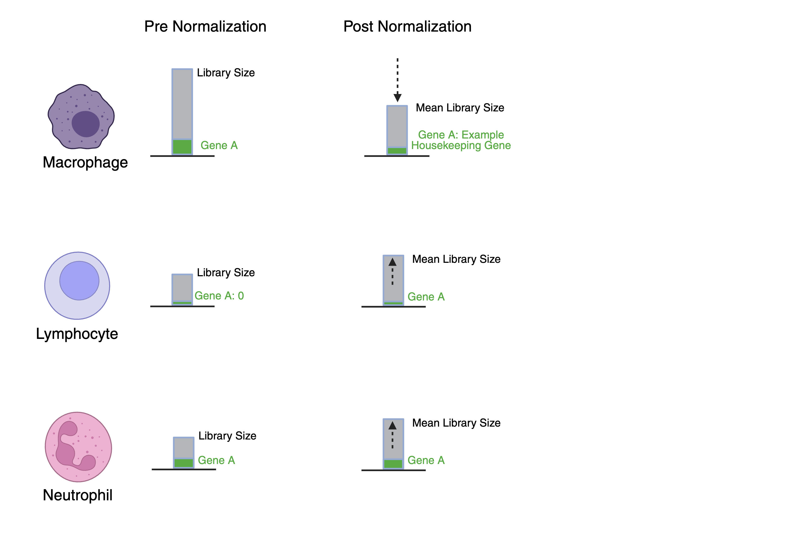

Quality Control#
Quality Control is an important step in single cell RNA sequencing. Although the droplet technology is impressive, some droplets may contain two cells, no cells, dying cells, or RNA that was present not in cells (ambient RNA).
Image from TheisLab Single Cell Best Practices
We suggest first graphing the quality of your cells by looking at:
o Features - Represents the Number of Genes Present in the Cell
o Count - Represents the Total RNAs in the Cell
o Mitochondrial Percent - Dying Cells Tend to have a High Percentage of Mitochondrial Genes
After loading in our data we need to visualize the cell count, number of genes in a cell, and percent mitochondria in a cell. However, the mitochondrial percent is not automatically calculated by our alignment tool cellranger.
To calculate it we use the command FeaturePercentage()
Click here to visit the documentation for Feature Percentage
so <- PercentageFeatureSet(so,
pattern = "^MT-",
col.name = "percent.mt")
Plotting Quality Markers#
Now that you have the percentage of mitochondrial genes per cell, the visualization of all three characteristics can be best achieved using a violin plot. To do this we use the command: VlnPlot()
As a reminder, for the majority of plotting functions in Seurat such as VlnPlot, the first entry into the options is typically your data. In Seurat your data is the Seurat Object created earlier. After each option we place a comma if we are going to feed an additional option. You can find other options in the help/documentation for Seurat. Click here to visit the documentation for VlnPlot
From the documentation, you can see that it mentions one option you can enter which is
features: Features to plot (gene expression, metrics, PC scores, anything that can be retrieved by FetchData)
Since we have multiple features we will create a vector (similar to a list) of the names of features that we want plotted using the c() function.
In R, text (characters or words) usually need quotes. Text or anything without quotes is typically treated as data or a function.
What option would we use in the VLnPlot() command to set the number of columns in the plot ouput?
We would use the option ncol and set it to three, in the documentation it states
ncol: Number of columns if multiple plots are displayed
VlnPlot(so, features = c("nFeature_RNA", "nCount_RNA", "percent.mt"), ncol = 3)
We then will want to visualize the data to see the ratios of Features vs. Counts and percent MT vs. Counts. We can create these plots by using the command: FeatureScatter()
Click here to visit the documentation for the FeatureScatter
By changing the option for feature1 and feature2 we can change the axis to differing quality control metrics.
plot1 <- FeatureScatter(so, feature1 = "nCount_RNA", feature2 = "percent.mt")
plot1
plot2 <- FeatureScatter(so, feature1 = "nCount_RNA", feature2 = "nFeature_RNA")
plot2
We can then add the plots together so they are projected side by side with the command: +
plot1 + plot2
Filtering the Data#
Using the plots you can choose which cells you want to include and which to filter out.
Best practices suggest that you should filter out cells with a high percent MT. Typically this cut-off is user dependent but above 15% or 20% are often used to mark dying cells.
We also want to filter features to get rid of doublets and empty droplets. Droplets typically contain a high amount of RNA content and empty droplets typically have a low gene count.
We will filter using the subset() function
Click here to visit the documentation for the R subset()
so <- subset(so, subset = nFeature_RNA > LOW VALUE & nFeature_RNA < HIGH VALUE & percent.mt < PERCENTCUTOFF)
so <- subset(so, subset = nFeature_RNA > 150 & nFeature_RNA < 5000 & percent.mt < 15)
Normalize and Scaling the Data#
We will then end up comparing gene counts between samples. Without normalizing the data, this could be difficult, because each sample will have a different number of total RNA sequences (counts).
If one sample has 700 counts and another sample has a total of 2,000 counts. TRUE or FALSE: When two droplets have different total counts, the droplet with the larger total will naturally have larger numbers for most features (like gene expression), even if the actual biological proportions are identical?
TRUE This can create the false impression that one droplet has more expression when it just had more molecules captured or sequenced.Normalization rescales each cell so they behave as if they had the same total number of counts. This removes the bias caused by sequencing depth and allows you to compare relative expression patterns instead of raw totals.
We normalize using the NormalizeData() command
Click here to visit the documentation for the Normalize Data)
Normalization.method= “LogNormalize”: Divide each gene count by the total counts in that cell, converts counts into relative expression
so <- NormalizeData(object = so, normalization.method = "LogNormalize", scale.factor = 1e4)
After we have normalized our data, the next step is to scale it.
Even after normalization, gene expression values can still vary widely between genes when we examine expression across individual cells. Some genes may have much larger values than others, which can cause them to dominate statistical analyses.
Scaling addresses this issue by bringing all genes onto the same statistical scale. This is done by centering each gene’s expression around its mean and adjusting the values by the gene’s standard deviation.
As a result, scaling ensures that each gene contributes more equally to analyses. This allows methods such as clustering or principal component analysis to focus on patterns of variation between cells rather than differences in overall magnitude of gene expression.
To scale the data, we use the command ScaleData()
Click here to visit the documentation for the Scale Data)
Scale.factor: after normalizing, the value is multiplies by this number. In this example, the counts are multiplied by 10,000
so <- ScaleData(object = so)

Image Created on BiorenderThis Tutorial was created by the WiseLab of Salve Regina University through the support of the Matt Larson Foundation and the NIH Early Career Development INBRE Award. To learn more about the Matt Larson Foundation